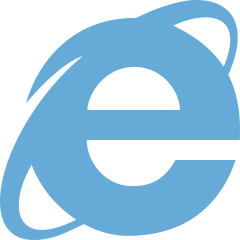

Internet Explorer가 무엇인가요?

Internet Explorer(인터넷 익스플로러)는
마이크로소프트에서 개발한 웹 브라우저입니다.
웹 브라우저란, 월드 와이드 웹을 기반으로 한 인터넷의
콘텐츠를 검색 및 열람하기 위한
응용 프로그램입니다.
쉽게 말해, '인터넷에 접속하기 위한 도구'입니다.
대게 '인터넷 = 인터넷 익스플로러 (위의 저 아이콘)'
으로 잘못 알려지는 경우가 많은데,
인터넷 익스플로러 역시 인터넷에 접속하기 위한 도구에
불과합니다.
잘 사용하고 있는데,
왜 구형인가요?
2015년 초, 윈도우 10의 공개 행사와 함께
인터넷 익스플로러를 대체할 차세대 브라우저
'마이크로소프트 엣지'(Microsoft Edge)를 공개하였습니다.
이에 따라 인터넷 익스플로러는
(일부 보안 업데이트를 제외하고는)
기능 업데이트가 진행되지 않게 되며
더 이상 새로운 기능을 제공하지 않습니다.
따라서
인터넷 익스플로러 11을 마지막으로
업데이트가 된 적이 없기 때문에
지금도 인터넷 익플로러를 사용한다는 것은
4년 전의 기술을 아직까지 사용하고 있는 셈입니다.
문제될 것이 있나요?
인터넷 익스플로러는 이름 뒤에 붙는 숫자로 버전을 구별합니다.
그나마 최신 버전인 11 조차 2015년에 만들어졌습니다.
게다가 11 미만의 버전인 8, 9, 10 버전은
보안 업데이트 조차 중단되었습니다.
즉, 이를 노린 해커의 공격으로
개인정보 등의 중요정보를 빼앗기거나
시스템의 치명적인 손상을 입을 수 있다는 것 입니다.
11 미만의 버전을 사용하신다면 무조건,
11 버전을 사용하더라도
아래의 최신 브라우저들로 교체할 것을 고려해보세요.
대체 브라우저
이제 오래된 브라우저를 보내주고
새로운 브라우저를 선택해보세요.
마이크로소프트 엣지
인터넷 익스플로러를 개발한 마이크로소프트에서
새롭게 만든 차세대 브라우저로,
기존의 인터넷 익스플로러에 익숙했던
사용자에게 알맞는 브라우저 입니다.
이 브라우저는 윈도우10에 기본 설치되어있습니다.
(Windows 전용으로, MacOS 또는 Linux 등에서는 사용할 수 없습니다.)
구글 크롬
구글에서 개발하였으며
2018년을 기준으로 세계에서
점유율이 50%를 넘어
가장 많이 이용하는 웹 브라우저입니다.
자체 개발 자바스크립트 엔진 V8은
최상의 성능과 호환성을 보여줍니다.
설치하기
네이버 웨일
간편한 화면 분할, 모바일 화면 접근에 용이한
웹 브라우저입니다.
또한, ActiveX를 사용할 수 있게 해주는
'플러그인 호환모드'를 제공하여
인터넷 익스플로러를 벗어나기 힘들었던 이유 중
하나였던 ActiveX를 대체할 수 있습니다.
설치하기
모질라 파이어폭스
낮은 사양의 컴퓨터,
많은 탭 등의 상황에서도 잘 작동하는
사용성 좋은 웹 브라우저입니다.
PDF 뷰어도 뛰어나 PDF 뷰어 대용으로
사용이 가능할 정도입니다.
설치하기
오페라
낮은 사양의 컴퓨터,
많은 탭 등의 상황에서도 잘 작동하는
사용성 좋은 웹 브라우저입니다.
OperaTurbo, OperaMail과 같이
편리한 여러가지 기능을 제공합니다.
설치하기